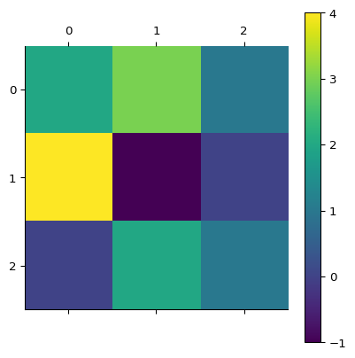
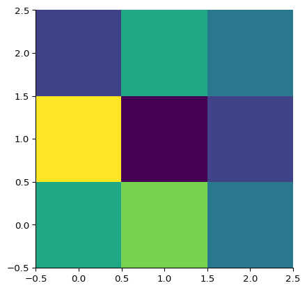
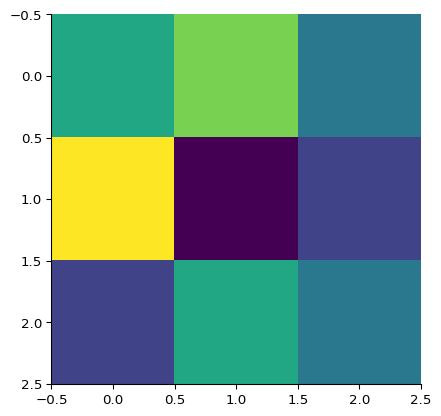
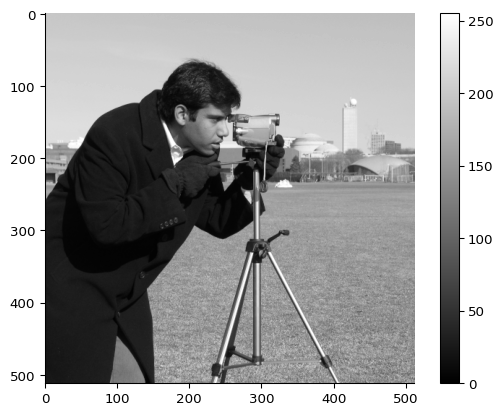
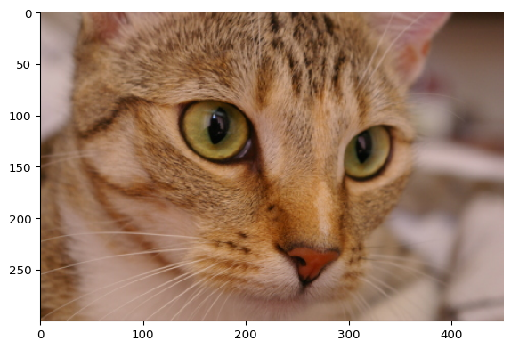
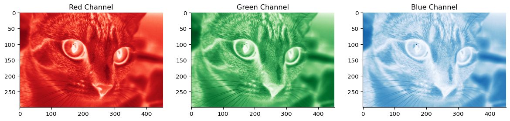
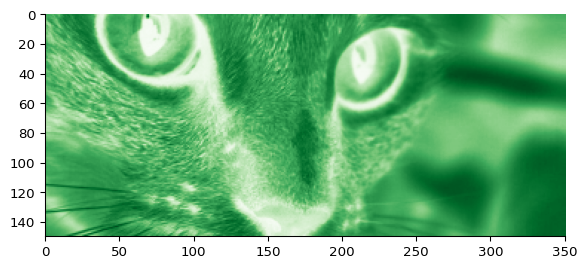
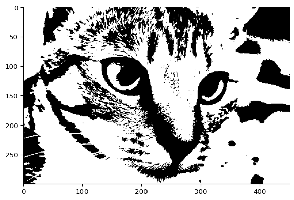
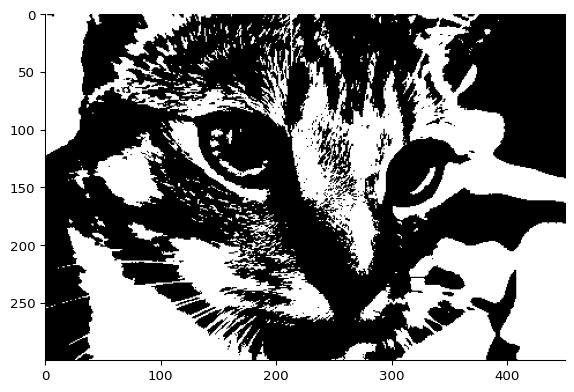
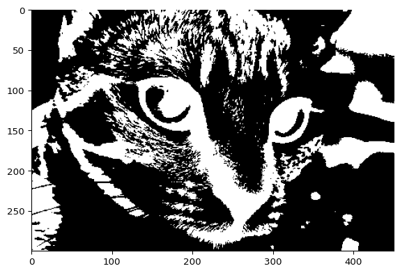

from numpy import random
rng = random.default_rng(seed=24)Multi-dimensional arrays
A numpy.ndarray is the more complete term for a numpy array object. Up until this point we have mainly been dealing with and using one dimensional arrays. Numpy arrays (unlike lists) have the concept of shape whicih means they can be multi-dimensional. This means they can represent a grid (2D), a cuboid (3D) and so forth.
The code below generates a numpy.array object containing random numbers. This is a 2D array with a 3 x 3 shape:
import numpy as np
shape = (3,3)
array1 = rng.random(shape)
print(array1.shape)
print(array1)(3, 3)
[[0.33026884 0.40517732 0.57473782]
[0.50639977 0.56421251 0.56968731]
[0.87411653 0.08643046 0.74247527]]We can select one element from this array using the following syntax. We still use square brackets and pass an index value but now we can pass values for each dimension seperated by a comma (,). This index is selecting the third column within the second row:
print(array1[1, 2])0.5696873105084019Using slicing (Start:Stop) syntax you can select an entire dimension at once by omitting both the Start and Stop values and just using :. You can see how this works if you try the slice with just the Start or just the Stop e.g.
print(array1[:2])
print(array1[2:])[[0.33026884 0.40517732 0.57473782]
[0.50639977 0.56421251 0.56968731]]
[[0.87411653 0.08643046 0.74247527]]Not including a Start index includes values from the beginning of the array/list etc. up to (but not including) the Stop.
Not including a Stop index reads from the Start to the end of the array/list etc.
So just using : with no Start or Stop selects all elements for that dimension.
This following syntax returns first row (first row, every column):
print(array1[0,:])[0.33026884 0.40517732 0.57473782]And this would return the first column (every row, first column):
print(array1[:,0])[0.33026884 0.50639977 0.87411653]numpy array objects store data in row-major order. Essentially this means for a 2D index this would be the equivalent of [y, x] rather than [x, y].
Basic properties of multi-dimensional arrays
Shape
The shape of a multi-dimensional array is a tuple that describes the size of each dimension. For example, a 2D array with 3 rows and 4 columns has a shape of (3, 4). You can access the shape of an array using the .shape attribute.
We can use many of the array initialisation functions we haver seen for 1d arrays also to create multi-dimensional arrays. For example, we can use np.zeros to create a 2D array of zeros, or np.ones to create a 2D array of ones. We can also use np.random.rand to create a 2D array of random numbers.
array_of_zeros = np.zeros(shape=(2, 3)) # 2 rows, 3 columnsnp.ones_like(array_of_zeros)array([[1., 1., 1.],
[1., 1., 1.]])Axis and Rank
A multi-dimensional array has multiple dimensions, each of which can be thought of as an axis. The number of dimensions is called the rank of the array. For example, a 2D array has a rank of 2, while a 3D array has a rank of 3. It is accessible via the .ndim attribute.
We typically call a rank 2 array a matrix. A rank 3 array (or higher) is often called a tensor.
rng = random.default_rng(seed=24)
random_matrix = rng.uniform(-1,1,size=(2,5)) # random floats between -1 and 1, 2 rows, 5 columns
random_matrixarray([[-0.33946233, -0.18964537, 0.14947564, 0.01279953, 0.12842501],
[ 0.13937462, 0.74823306, -0.82713908, 0.48495054, 0.64073453]])random_matrix.ndim # two dimensions, rank 2, a matrix2random_tensor = rng.integers(0,3,size=(2,3,4)) # random integes in [0,3), 2x3x4 tensor
random_tensorarray([[[0, 2, 1, 1],
[2, 2, 0, 0],
[1, 2, 0, 1]],
[[2, 0, 1, 0],
[0, 1, 1, 0],
[0, 1, 0, 1]]])random_tensor.ndim3We can perform operations along specific axes of a multi-dimensional array. For example, we can sum all the elements along a specific axis using the np.sum function with the axis parameter.
small_matrix = rng.integers(0,2,size=(3,2))
small_matrixarray([[1, 1],
[1, 0],
[1, 0]])small_matrix.sum(axis=0) # sum along the first axis (rows)array([3, 1])small_matrix.sum(axis=1) # sum along the second axis (columns), can you explain the resulting shape?array([2, 1, 1])One can do the same also with useful statistical descriptors such as np.mean, np.std, etc.
np.mean(small_matrix, axis=0) # mean along the first axis (rows)array([1. , 0.33333333])Slicing
Slicing works similarly to 1D arrays, but you can slice along multiple axes. For example, you can slice a 2D array to get a submatrix or a specific row or column.
small_matrix[:, 0] # all rows, first columnarray([1, 1, 1])small_matrix[:2,:] # first two rows, all columnsarray([[1, 1],
[1, 0]])small_matrix[::-1,:1]array([[1],
[1],
[1]])Reshaping and flattening
The last example show an inetresting case: we extracted a single column from the matrix, but it is still a 2D array with shape (3, 1).
selection = small_matrix[::-1,:1]
print("shape", selection.shape)
print("rank", selection.ndim)shape (3, 1)
rank 2What if we wanted a truly 1d array (rank 1)? We need to reshape the array.
We can use the np.reshape function to change the shape of an array without changing its data. For example, we can reshape a 2D array into a 1D array or vice versa.
Reshape takes a tuple of the new shape as an argument. If you want to flatten an array (convert it to a 1D array), you can use -1 as one of the dimensions, which tells NumPy to infer the size of that dimension based on the total number of elements.
selection = small_matrix[::-1,:1]
reshaped_selection = selection.reshape((3,)) # reshape to a 1D array excplicitly
print("reshaped shape", reshaped_selection.shape)
print("reshaped rank", reshaped_selection.ndim)
print("reshaped selection", reshaped_selection)reshaped shape (3,)
reshaped rank 1
reshaped selection [1 1 1]#same code as above, but with inferred shape
selection = small_matrix[::-1,:1]
reshaped_selection = selection.reshape(-1) # infererd shape
print("reshaped shape", reshaped_selection.shape)
print("reshaped rank", reshaped_selection.ndim)
print("reshaped selection", reshaped_selection)reshaped shape (3,)
reshaped rank 1
reshaped selection [1 1 1]Another way to cast a multi-dimensional array to a 1D array is to use the np.ravel() function, which returns a flattened view of the array (not a copy).
a_matrix = rng.integers(0,10,size=(2,3)) # random integers in [0,10), 2x3 matrix
print("Original matrix:\n", a_matrix)
ravelled_view = a_matrix.ravel()
print("Flattened view:", ravelled_view) # flatten the array to a 1D arrayOriginal matrix:
[[4 7 8]
[7 7 0]]
Flattened view: [4 7 8 7 7 0]If we modify the view, we modify the original array as well.
ravelled_view[0] = 100 # modify the view
print("Modified view:", ravelled_view) # the view is modified
print("Original array:", a_matrix) # the original array is modified as wellModified view: [100 7 8 7 7 0]
Original array: [[100 7 8]
[ 7 7 0]]To obtain a completely independent flattened copy of the array, you can use the np.flatten() method, which returns a copy of the array in a 1D format.
a_matrix = rng.integers(0,10,size=(2,3)) # random integers in [0,10), 2x3 matrix
print("The original:\n",a_matrix)
flattened_copy = a_matrix.flatten()
print("Flattened:",flattened_copy) # flatten the array to a 1D array
flattened_copy[0] = 100 # modify the copy
print("Flattened after modification:",flattened_copy) # the copy is modified
print("The original:\n",a_matrix) # the original array is not modifiedThe original:
[[4 4 7]
[4 6 9]]
Flattened: [4 4 7 4 6 9]
Flattened after modification: [100 4 7 4 6 9]
The original:
[[4 4 7]
[4 6 9]]We can also do the opposite and increase the rank of an array by reshaping it. For example, we can reshape a 1D array into a 2D array with one column or one row.
one_dimensional_array = rng.integers(0,10,size=(5,)) # random integers in [0,10), 1D array
print("One-dimensional array:", one_dimensional_array)
reshaped_array = one_dimensional_array.reshape((5,1)) # reshape to a 2D array with one column
print("Reshaped array:\n", reshaped_array)One-dimensional array: [5 5 5 3 2]
Reshaped array:
[[5]
[5]
[5]
[3]
[2]]Broadcasting
Combining arrays of different shapes is possible in NumPy using a feature called broadcasting. Broadcasting allows NumPy to perform operations on arrays of different shapes by automatically expanding the smaller array to match the shape of the larger one.
# Minimal broadcasting example: rank 2 (matrix) with rank 1 (vector)
matrix = np.array([[1, 2, 3],
[4, 5, 6]])
vector = np.array([10, 20, 30])
# Broadcasting addition: vector is added to each row of the matrix
result = matrix + vector
print("Matrix:\n", matrix)
print("Vector:", vector)
print("Result of broadcasting:\n", result)Matrix:
[[1 2 3]
[4 5 6]]
Vector: [10 20 30]
Result of broadcasting:
[[11 22 33]
[14 25 36]]You can reshape a 1D array to a column or row vector and use broadcasting to expand it into a large table. For example, to create a table where each row is the original 1D array, or each column is the original array:
one_dimensional_array = np.linspace(1, 5, num=5) # create a 1D array with 5 elements
print("One-dimensional array:", one_dimensional_array)
# Expand one_dimensional_array to a table with 5 rows and 5 columns
row_vector = one_dimensional_array.reshape(1, -1) # shape (1, 5)
column_vector = one_dimensional_array.reshape(-1, 1) # shape (5, 1)
# Broadcasting to create a table
table = column_vector + row_vector
print("BroadcastedTable:\n",table)One-dimensional array: [1. 2. 3. 4. 5.]
BroadcastedTable:
[[ 2. 3. 4. 5. 6.]
[ 3. 4. 5. 6. 7.]
[ 4. 5. 6. 7. 8.]
[ 5. 6. 7. 8. 9.]
[ 6. 7. 8. 9. 10.]]Two-dimensional arrays as matrices: some linear algebra
Two-dimensional arrays are often used to represent matrices or images. In a matrix, each element can be accessed using two indices: - one for the row - one for the column.
A matrix is a rectangular array of numbers, symbols, or expressions arranged in rows and columns and is an essential concept in linear algebra.
For examplle, let’s consider the simple system of simultaneous equations:
\[ \begin{align*} 2x + 3y +z &= 5 \\ 4x - y &= 1 \\ 2y +z &= 3 \end{align*} \]
This can be represented in matrix form as: \[ \begin{bmatrix} 2 & 3 &1 \\ 4 & -1 &0 \\ 0 & 2 &1 \end{bmatrix} \begin{bmatrix} x \\ y \\ z \end{bmatrix} = \begin{bmatrix}5 \\ 1\\ 3 \end{bmatrix} \]
And if we call \(A\) the matrix of coefficients, \(\mathbf{x}\) the vector of variables, and \(b\) the vector of constants, we can write this as: \[ A \mathbf{x} = \mathbf{b} \]
where \[A = \begin{bmatrix} 2 & 3 &1 \\ 4 & -1 &0 \\ 0 & 2 &1 \end{bmatrix}, \quad \mathbf{x} = \begin{bmatrix} x \\ y\\ z \end{bmatrix}, \quad \mathbf{b} = \begin{bmatrix} 5 \\ 1\\ 3 \end{bmatrix} \]
A key result of linear algebra is that if \(A\) is invertible, we can solve for \(\mathbf{x}\) by multiplying both sides of the equation by the inverse of \(A\): \[ \mathbf{x} = A^{-1} \mathbf{b} \]
where \(A^{-1}\) is the inverse of matrix \(A\).
NumPy has a dedicated linear algebra submodule called numpy.linalg that provides functions for performing various linear algebra operations, including matrix inversion, solving systems of equations, and computing eigenvalues and eigenvectors.
A = np.array([[2, 3,1], [4, -1,0],[0,2,1]])
b = np.array([[5], [1], [3]]) # we use double brackets to create a column vector
print("Matrix A:\n", A)
print("Vector b:\n", b)Matrix A:
[[ 2 3 1]
[ 4 -1 0]
[ 0 2 1]]
Vector b:
[[5]
[1]
[3]]The linear algebra submodule has a function called solve which can be used to solve the above equation efficiently:
x = np.linalg.solve(A, b)
xarray([[0.5],
[1. ],
[1. ]])But we can use numpy to verify that this is correct. We can use the symbol @ to perform matrix multiplication in numpy.
A @ xarray([[5.],
[1.],
[3.]])We can also directly calculate the inverse of a matrix using the inv function from the numpy.linalg and use it to solve the equation
x = np.linalg.inv(A) @ b
xarray([[0.5],
[1. ],
[1. ]])All the most common linear algebra operations are available in the numpy.linalg submodule:
- tranpose
b.Tarray([[5, 1, 3]])- scalar (dot) product (which takes two vectors and returns a scalar)
np.dot(b.T,b)array([[35]])- cross product
np.cross(b.T, b.T) #takes row vectors and returns a row vectorarray([[0, 0, 0]])Linear algebra applications are beyond the scope of this course (so, there will be no assessment of these), but they are widely used in various fields such as physics, computer science, and engineering. For example, they are essential in computer graphics for transformations, in machine learning for optimization, and in physics for solving systems of equations. So it is important for you to know that all these can be implemented efficiently using numpy.
Matrices as images
A two-dimensional table of numbers can also be used to represent an image. Each number in the table corresponds to a pixel in the image, and the value of the number represents the color or intensity of that pixel.
matplotlib provides a convenient way to visualize 2D arrays as images. The matshow function can be used to display a 2D matrix as an image, where the values in the array are mapped to colors.
import matplotlib.pyplot as plt
plt.matshow(A)
plt.colorbar()
print(A)[[ 2 3 1]
[ 4 -1 0]
[ 0 2 1]]
Notice that the indices of the y-axis increase as we go down. These are the indices of the rows in the matrix.
For a matrix of a given shape we can get the indices using the np.indices function, which returns a grid of indices for each dimension. This can be useful for creating masks or selecting specific regions of the matrix.
row_index, col_index = np.indices(A.shape)
print("Row indices:\n", row_index)
print("Column indices:\n", col_index)Row indices:
[[0 0 0]
[1 1 1]
[2 2 2]]
Column indices:
[[0 1 2]
[0 1 2]
[0 1 2]]An alternative function is imshow, which is more general and can be used for both 2D arrays and images.
Here we can set the origin of the axis:
plt.imshow(A, origin='lower') # origin='lower' to set the origin at the bottom left
plt.imshow(A, origin='upper') # origin="upper" to set the origin at the top left
The main difference between matshow and imshow is that matshow is specifically designed for displaying matrices, while imshow is more general and can be used for both 2D arrays and images. matshow automatically adjusts the aspect ratio to make the matrix square, while imshow does not. Also the interpolation method used by matshow is different from that used by imshow, which can affect the appearance of the image.
Images are represneted as 3d arays: every entry is a the intensity of a pixel (if the image is grayscale) or the intensity of a colour (e.g. red, green or blue) if the image is in colour.
from skimage import data # importing images from a popular image library
image = data.camera() # a grayscale image
plt.imshow(image, cmap='gray') # display the image in grayscale
plt.colorbar()
Let’s take a colour image
color_image = data.chelsea()
plt.imshow(color_image) # display the color image
This is no longer just a 2d array, it has a third dimension for the colour channels (red, green, blue). We can access the individual colour channels by slicing the array along the third dimension.
color_image.shape(300, 451, 3)We can slice the array to get the various channels (notice that we specify the colormap cmap argument to display the channels in the appropriate colour):
fig,ax = plt.subplots(1, 3, figsize=(15, 5)) # create a figure with 3 subplots
ax[0].imshow(color_image[:, :, 0], cmap='Reds') # display the red channel
ax[0].set_title('Red Channel')
ax[1].imshow(color_image[:, :, 1], cmap='Greens') # display the green channel
ax[1].set_title('Green Channel')
ax[2].imshow(color_image[:, :, 2], cmap='Blues') # display the blue channel
ax[2].set_title('Blue Channel')Text(0.5, 1.0, 'Blue Channel')
If we want to subsample regions of an image, we can simply slice the array further in its rows and columns.
plt.imshow(color_image[100:250, 100:, 1], cmap='Greens') # display the green channel
We can also use boolean indexing to filter the image based on conditions.
For example, we can binarise it by applying a threshold
green = color_image[:,:,1]
plt.imshow(green>100, cmap='gray') # display a binary image where pixels with green channel value > 100 are white
We can even perform logical operations using numpy
- AND with
& - OR with
| - NOT with
~ornp.logical_not
green = color_image[:,:,1]
red = color_image[:,:,0]
plt.imshow( (green>120) & (red>120) , cmap='gray')
plt.imshow(np.logical_not(green>100), cmap='gray')
Pair programming
The following exercise will allow you explore multi-dimensional arrays by working in pairs. One person will write the code, while the other will explain what the code does. You can switch roles after each exercise.
There are two parts so, you can switch roles after each part.